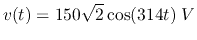
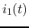
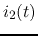
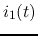
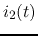
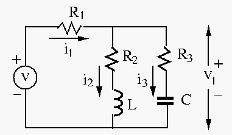
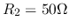
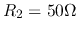
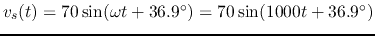
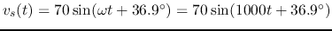

In the circuit below, the voltage source is
,
 , and the three currents , , and
, and the three currents , , and  have
the same amplitudes. Moreover, it is also known that the total real power
consumption of the circuit is
have
the same amplitudes. Moreover, it is also known that the total real power
consumption of the circuit is  . Find
. Find  ,
,  , and
, and  , also find
, , and
, also find
, , and  .
.

In the circuit below,  , ,
, ,  ,
,  .
The input voltage is
.
The system is in steady state before the switch is closed at
.
The input voltage is
.
The system is in steady state before the switch is closed at  . Find voltage
. Find voltage
 across
across  and current
and current  through
through  for
for  .
.

Hint: While maximizing or minimizing the magnitude of a complex function with a constant real part, simply find the variable that maximizes or minimizes the imaginary part of the function. No need to use the method you learned in calculus (i.e., set the derivative of the function to zero and solve for the variable).